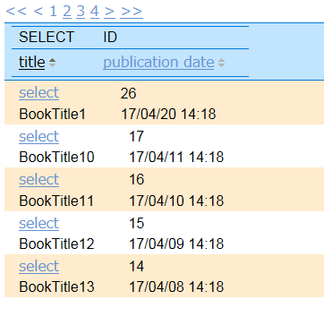

<span wicket:id="navigator">[dataview navigator]</span>
<table class="grid">
<tr>
<th>
<table>
<tr>
<th>SELECT</th>
<th>ID</th>
</tr>
<tr>
<th wicket:id="orderByName">title</th>
<th wicket:id="orderByPublishedAt">publication date</th>
</tr>
</table>
</th>
</tr>
<tr wicket:id="sorting">
<td>
<table>
<tr>
<td><a href="#" wicket:id="select">select</a></td>
<td><span wicket:id="id">[id]</span> </td>
</tr>
<tr>
<td><span wicket:id="name">[name]</span></td>
<td><span wicket:id="publishedAt">[publishedAt]</span></td>
</tr>
</table>
</td>
</tr>
</table>
MySortableDataProvider dp = new MySortableDataProvider();
final DataView dataView = new DataView("sorting", dp)
{
private static final long serialVersionUID = 1L;
@Override
protected void populateItem(final Item item)
{
final Book book = item.getModelObject();
item.add(new Link("select"){
private static final long serialVersionUID = 1L;
@Override
public void onClick(){
if (book != null){
BookSortingPage.this.selected = book;
}
}
});
item.add(new Label("id", String.valueOf(book.getId())));
item.add(new Label("name", book.getName()));
item.add(new Label("publishedAt", book.getPublishedAt()));
//Change color at even row and odd row
item.add(AttributeModifier.replace("class", new AbstractReadOnlyModel()
{
private static final long serialVersionUID = 1L;
@Override
public String getObject()
{
return (item.getIndex() % 2 == 1) ? "even" : "odd";
}
}));
}
};
dataView.setItemsPerPage(5L);
//Sortable Column
add(new OrderByBorder("orderByName", "name", dp)
{
private static final long serialVersionUID = 1L;
@Override
protected void onSortChanged()
{
dataView.setCurrentPage(0);
}
});
//Sortable Column
add(new OrderByBorder("orderByPublishedAt", "publishedAt", dp)
{
private static final long serialVersionUID = 1L;
@Override
protected void onSortChanged()
{
dataView.setCurrentPage(0);
}
});
add(dataView);
add(new PagingNavigator("navigator", dataView));
}